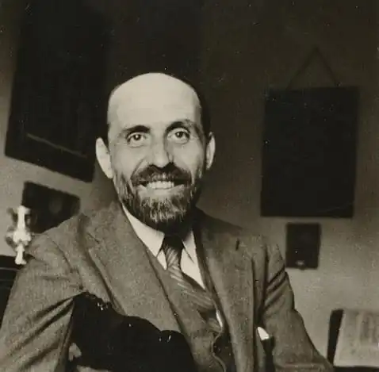

ХІМЕНЕС, Хуан Рамон (Jimenez, Juan Ramon, автонім: Хіменес М. — 23.12. 1881, Могер — 29.05.1958, Сан-Хуан, Пуерто-Ріко) — іспанський поет, лауреат Нобелівської премії 1956 р.
Головним і єдиним змістом життя Хіменеса була поезія, центральна тема якої — пошуки та захист краси. У нього не було суспільного темпераменту, як, приміром, у А. Мачадо, проте Хіменес був людиною високої чесності і шляхетності.
Хіменес народився у Могері (Андалузія) у сім'ї багатого виноторговця. Він здобув освіту в університеті у Севільї. У 1898 р. відвідав Мадрид, де познайомився з Р. Даріо. У 1902-1903 pp. Хіменес побував у Парижі та Швейцарії і розширив свої уявлення про французьку модерну поезію. На формуванні психологічного образу Хіменеса позначилася важка нервова хвороба, яка змушувала його періодично лікуватися в санаторіях Франції й Іспанії. У 1916 р. поет одружився із перекладачкою Р. Тагора Зенобією Кампрубі, котра стала його другом і помічницею на все життя. Хіменес був дуже плідним автором і майже щороку видавав нову поетичну збірку. Він спробував систематизувати і надати якоїсь єдності своїм віршам: у 1917 р. видав "Першу поетичну антологію", у 1922 — другу, у 1953 р. — третю. З початком громадянської війни поет, як він сам зізнався, у "пошуках тиші" покинув батьківщину. Проте у 1936 р. офіційно заявив, що належить до республіканського табору і не повернеться у франкістську Іспанію. Він замешкував на Кубі, у США, Пуерто-Ріко. У 1956 р. Хіменес отримав Нобелівську премію "за ліричну поезію — взірець щонайвищої духовної сили та художньої досконалості в іспанській літературі", а через три дні від раку померла його дружина. Поета знову охопила депресія, і незабаром він помер у тій самій клініці, що і його дружина. 6 червня 1958 р. тіла Хіменеса і Зенобії перевезли в Іспанію і поховали на кладовищі Ісуса в Могері. Якось Хіменес таким чином висловився про себе: "Я створюю свій світ всередині себе". Він назвав і витоки власної творчості. X. говорив про значення для нього "вічної" іспанської поезії — романсеро, творчого спадку Л. де Гонґори-і-Арґоте, Ґ.А. Беккера. Другим джерелом творчості була для нього модерністська поезія — Р. Даріо, французькі й іспанські модерністи. Але, звичайно, у процесі свого творчого розвитку він подолав ці впливи і віднайшов власну манеру. У цьому розвитку Хіменес пройшов два етапи. Перший — приблизно до 1915 р. Найяскравіші збірки цього періоду: "Пасторалі" ("Pastorales", 1903—1905), "Далекі сади" ("Jardines lejanos", 1904), "Весняні балади" (1907), "Дзвінка caмота" ("Lasoledadsonora", 1911). Хіменес відштовхується від прози життя, він шукає красу у природі, коханні та смерті. Його сприйняття світу тонке, суб'єктивне, іноді дещо дивне і вигадливе. Із художньої точки зору у його віршах домінує музика та колір. Музичними є самі вірші Хіменеса, як, приміром, "Квіти у грозу": Сходяться квіти з квіткамиІ злинають, наче птахи.Не вмирають!(А злинають, наче птахи).Пориваються знестямиПід хмаринням з блискавками.Не вмирають!(Під хмаринням з блискавками). (Пер. М. Литвинця)Саме музика вносить у його поезію ноту меланхолії. Не меншу роль відіграє у поезії Хіменеса колір, який він трактує у дусі живопису імпресіоністів.До першого періоду творчості поета належить також його прозовий твір "Платеро і я" ("Platero у уо", 1907-1916), у якому він зображує своє життя у рідному Могеро. Платеро (з ісп. — "срібний") — ім'я віслючка, на якому мандрує поет і який є його другом і своєрідним побратимом. Книга має підзаголовок "Андалузька елегія ". Поет ідеалізує патріархальне сільське життя, яке він протиставляє жорстокості цивілізації. Симпатії поета викликають тварини, у яких він бачить утілення беззахисності та природності, а також люди, котрим чужі егоїзм і черствість. Він знаходить їх поміж причинних і вбогих (друг його — хвора дівчинка). Новий період творчості розпочинається, умовно кажучи, зі збірки "Щоденник щойно одруженого поета" ("Diario de un poeta recien casado", 1916). На цей час припадає поява таких яскравих збірок, як "Вічність" ("Eternidades", 1917), "Краса" ("Belleza", 1917), "Єдність" ("Unidad", 1925) і "Пісня" ("Сапсіоп", 1935). Сам Хіменес заперечував надто різке протиставлення нового і старого періодів: "Не щось нове, а відхід від старого, а глибше очищення того самого". Це очищення полягало у звільненні від чуттєвого, реального, матеріального, від кольорів і метафор, у створенні більш духовного, абстрагованого та неприкрашеного вірша. І в цей період поета хвилює тема смерті, самотності, єднання людини із природою, проте його манера змінюється. Колір і музика, що були найяскравішими ознаками його ранньої творчості, "розмилися" і потихшали: Болюча гілка із осіннім листом —Обернена на сонці в самоцвіт.А хмари вкрадуть сонце, й смуток вітСтає убогим, пилявим, нечистим.Все, що було прекрасно-урочистим,Увесь галузки золотої міт У понадземний забирає світГодина хмарна повівом імлистим.Тож, серце, й ти — гніздо сухе і марне...("Золота галузка", пер І. Качуровського)Українською мовою ряд віршів Хіменеса переклали В. Бургардт, І. Качуровський, Б. Бойчук, М. Литвинець, П. Марусик й ін.. А. Штейн